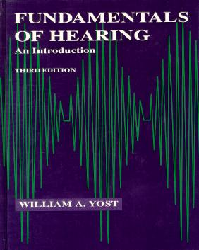

|  |
JAVA Sound and Hearing Demonstrations
Demonstrations of Sound and Hearing to accompany the book
Fundamentals of Hearing, An Introduction (3rd Ed.) by
William A. Yost, courtesy of Parmly Hearing Institute.
Java programming by Greg
Sandell.
|
|
The Demonstrations
-
Spectrum
Analysis
- A demonstration of the relationship between waveform, amplitude
spectrum and phase spectrum, to accompany chapter 4, "Complex Stimuli"
|
Note:
- These applets are written in Java 1.1. Not all browsers are fully
equipped to display Java 1.1 applets. Microsoft's Internet Explorer's
latest versions are Java 1.1 compliant. Netscape's latest browser
(version 4.06 as of this writing) is compliant with Java 1.1 only by
installing an extension or 'patch'. You can obtain the patch and get
installation information by going to the Netscape Developer's home
page and following the link for JDK 1.1
Support. Read
more detail on Java 1.1 support here.
The applet runs well under Internet Explorer and Netscape running on
Unix, Windows NT and 95 platforms. In my experience, Macintosh
plotforms do not run Java applets as well; the lack of preemptive
multitasking in the Mac OS causes performance to suffer.
- Your computer also needs to have a sound card
|